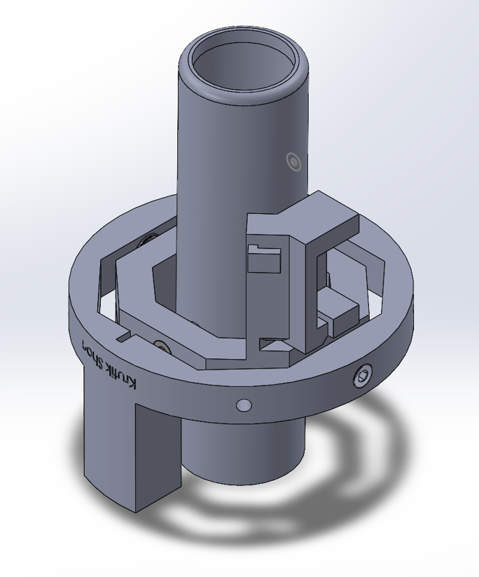

Thrust Vector Control System
Embedded system consisting of an STM32 microcontroller, 6-axis gyroscope and two servos, along with the mechanical design. Designed to stabilize the trajectory of a model rocket based on gyroscope readings and report flight statistics.
STM32IMUServosMechanical design